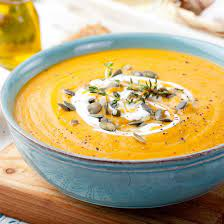

Menu
Soupe

Recette simple pour une soupe de légume toujours réussie !
Ingrédients
- 2 oignons
- 2 gousses d'ail
- gimgembre (en poudre peut aller)
-
divers légumes : pas de quantité spécifique, cela peut varier d'une préparation à une autre.
A noter : équilibrer les carottes et les pommes de terres, et privilégier les légumes verts (courgette, poireaux, brocoli, épinards, etc.).
- épices : cardamome, paprika, noix de muscade, coriandre,...
Préparations
- Emincer les oignons puis les faire revenir dans la casserolle avec une bonne dose d'huile d'olive et le mélange d'épices.
- Faire transpirer les oignons pendant quelques minutes à feu doux/moyen.
- Rajouter les légumes préalablement épluchés et coupés.
- Couvrir la casserolle et laisser revenir pendant une dizaine de minute à feu moyen. Remuer de temps en temps.
- Rajouter l'eau à niveau des légumes pour une soupe bien fluide.
- Laisser cuire pendant 20 à 30 minutes (controler de temps en temps).
- Mixer les légumes avec un mixeur plongeant.
- Servir nature ou bien avec du lait de coco ou de la crème fraiche.